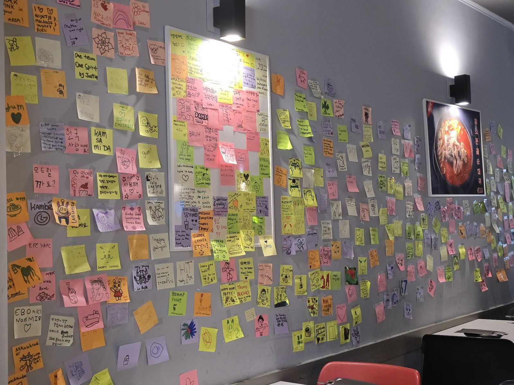
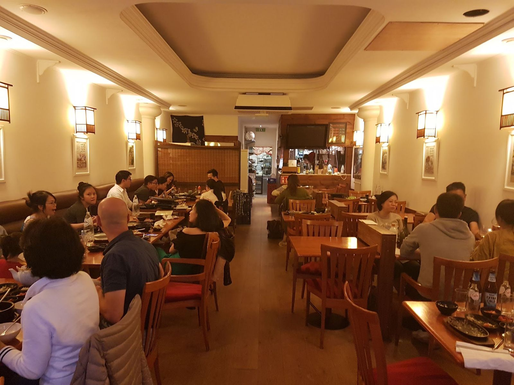
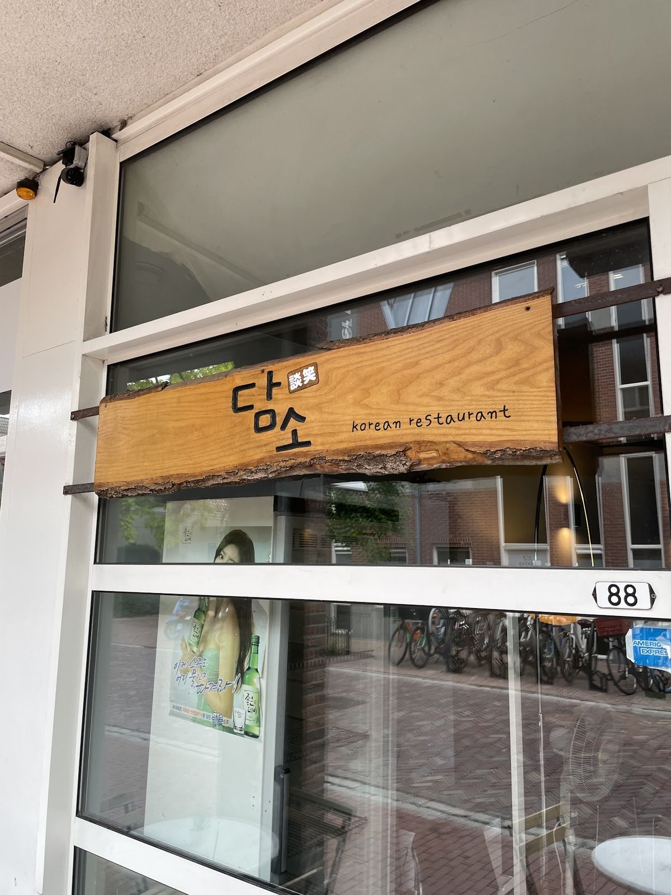

이야기Since 2008
A good talk,
with laughter.
In Korean, damso (담소) means an easy conversation full of laughter. Since 2008 Damso has been cooking in the old village of Amstelveen, home to one of the largest Korean communities in the Netherlands.
You can see it on the wall: hundreds of notes left behind by guests.
“A bit like a home away from home, always full of locals (ie Korean guests), which is always a good sign.”travelwise24 · Tripadvisor


